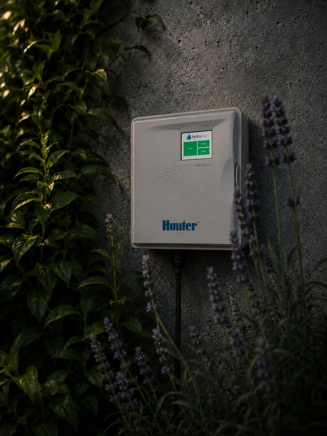
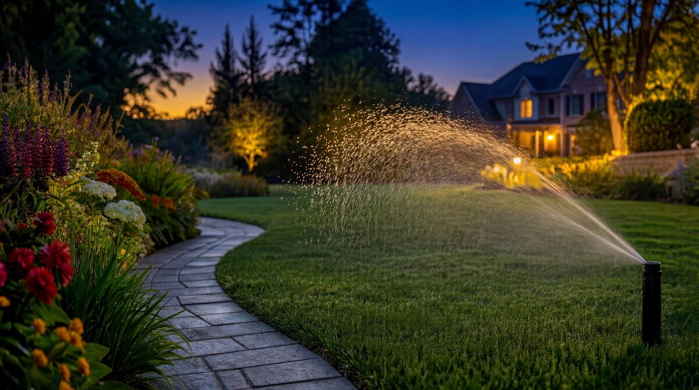
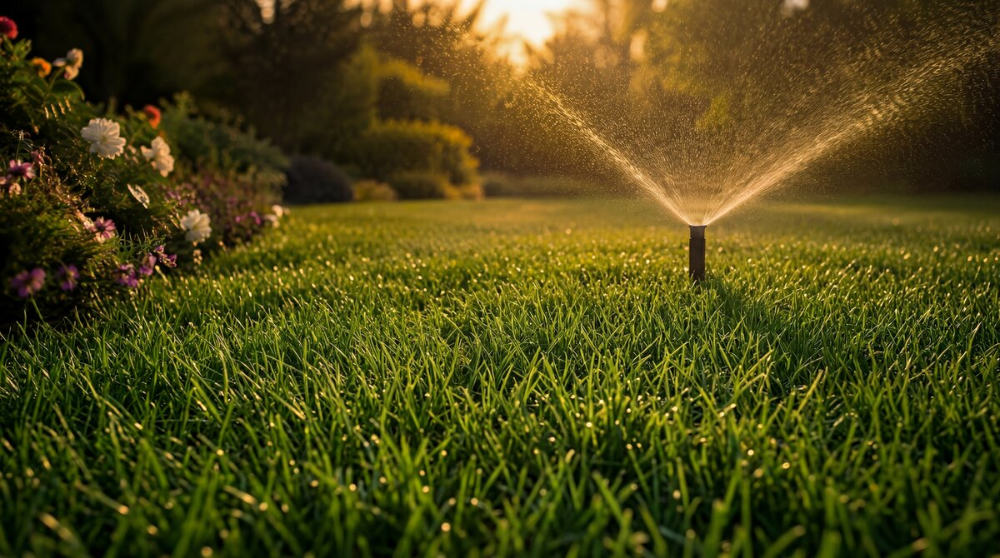
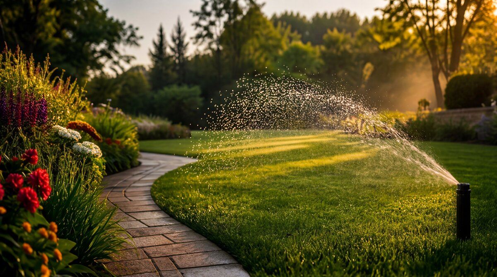

Automata öntözés
A tökéletes kert titka sokszor láthatatlan.
Precíz vízellátás a mindig egészséges és élő növényzetért.
KÉREK AJÁNLATOTOKOS ÖNTÖZÉS
Automata öntözőrendszereink pontosan akkor és annyi vizet juttatnak ki, amennyire a növényeknek szükségük van.
IDŐT ÉS VIZET SPÓROL
Hatékony vízfelhasználás az időjárás-érzékelők segítségével.
EGÉSZSÉGES KERT
Egyenletes vízellátás a gyökérzónához, az optimális növekedés és zöld megjelenés érdekében.
KÉNYELEM
Mobilról is vezérelhető rendszerek, bárhonnan irányíthatja öntözését.
HOSSZÚ TÁVÚ ÉRTÉK
Megbízható, tartós megoldások, amelyek növelik kertje értékét.
SZAKÉRTŐ TELEPÍTÉS
Prémium alkatrészek és precíz telepítés a hosszú élettartamért.
PRECÍZ VÍZELLÁTÁS, MINDEN KÖRÜLMÉNY KÖZÖTT
A megfelelő víz, a megfelelő helyen, a megfelelő időben.
Rendszereink kertje adottságaihoz és növényei igényeihez igazítjuk. Legyen szó pázsitról, virágágyásról, sövényről vagy fás szárú növényekről, az öntözés mindig optimális lesz.
- Időjárás-érzékelős vezérlés
- Egyedi zónák, pontos beállítások
- Csendes, megbízható működés
- Minőségi alkatrészek, hosszú élettartam


AMIT KÍNÁLUNK
01.
TERVEZÉS
Az Ön kertjéhez szabva.
02.
PRÉMIUM ALKATRÉSZEK
03.
PRECÍZ TELEPÍTÉS
Gyors, tiszta, megbízható.
04.
OKOS VEZÉRLÉS
Időjárás érzékelővel, telefonról is.
05.
KARBANTARTÁS
Rendszeres ellenőrzés a hosszú élettartamért.
06.
BŐVÍTHETŐ MEGOLDÁSOK
Kertje változásaihoz rugalmasan igazodunk.

Láthatatlan technológia. Látható eredmény.
Élvezze a gyönyörű, egészséges kertet minden nap – mi gondoskodunk róla.
KÉREK AJÁNLATOT